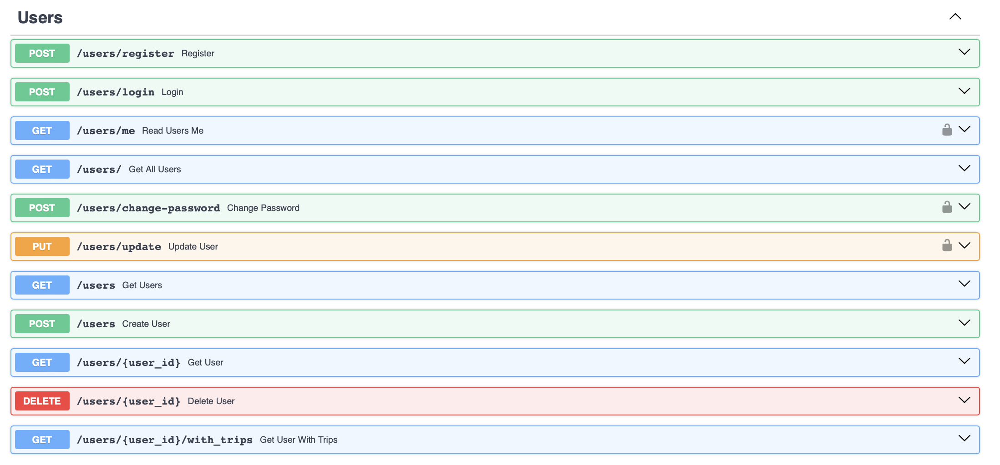
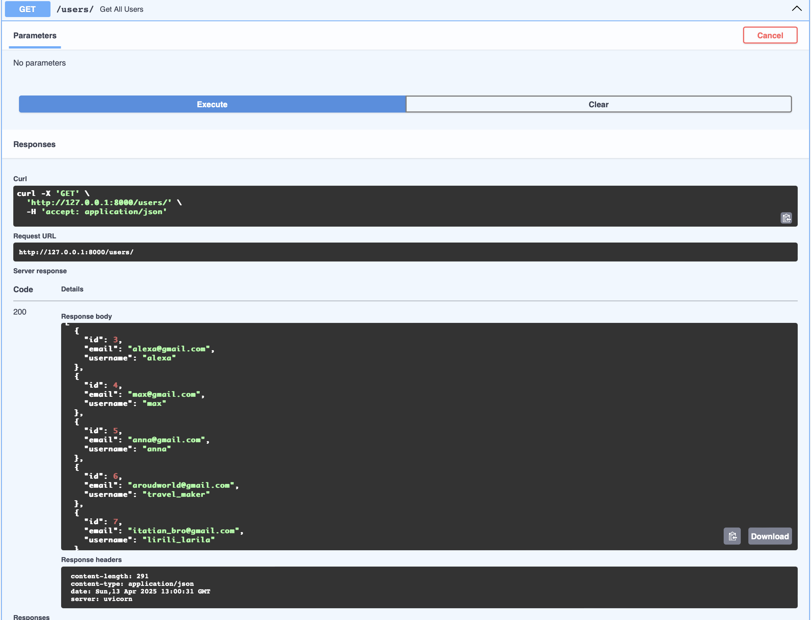
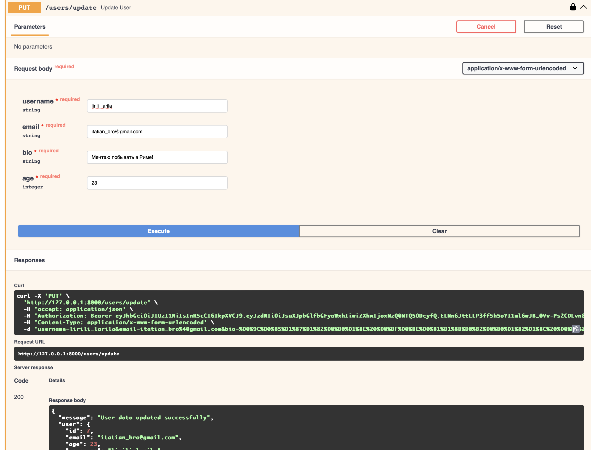
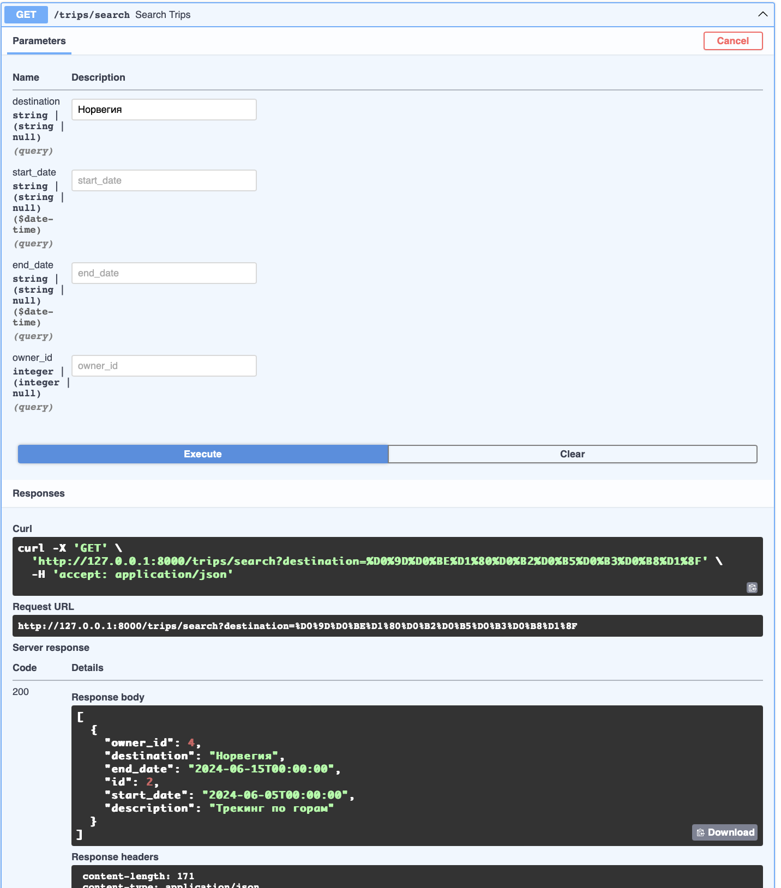
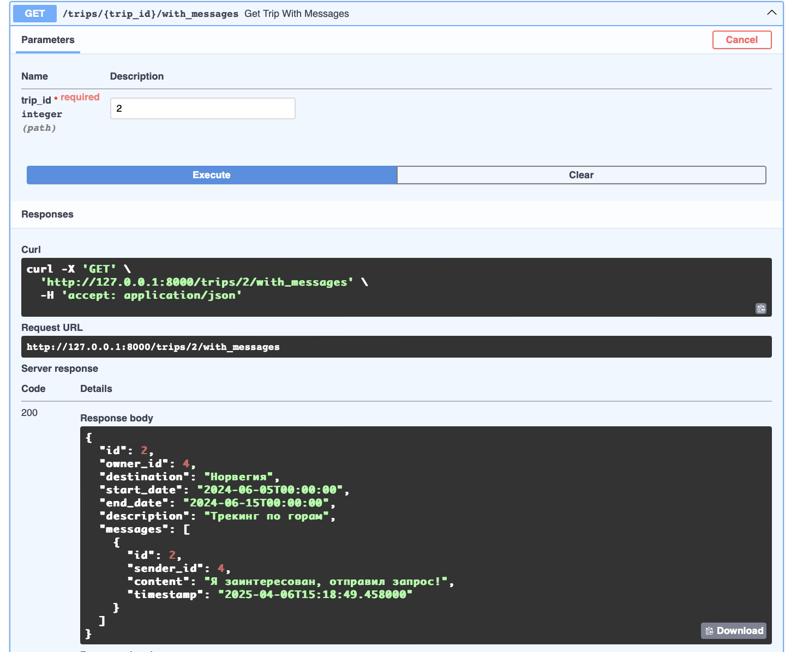
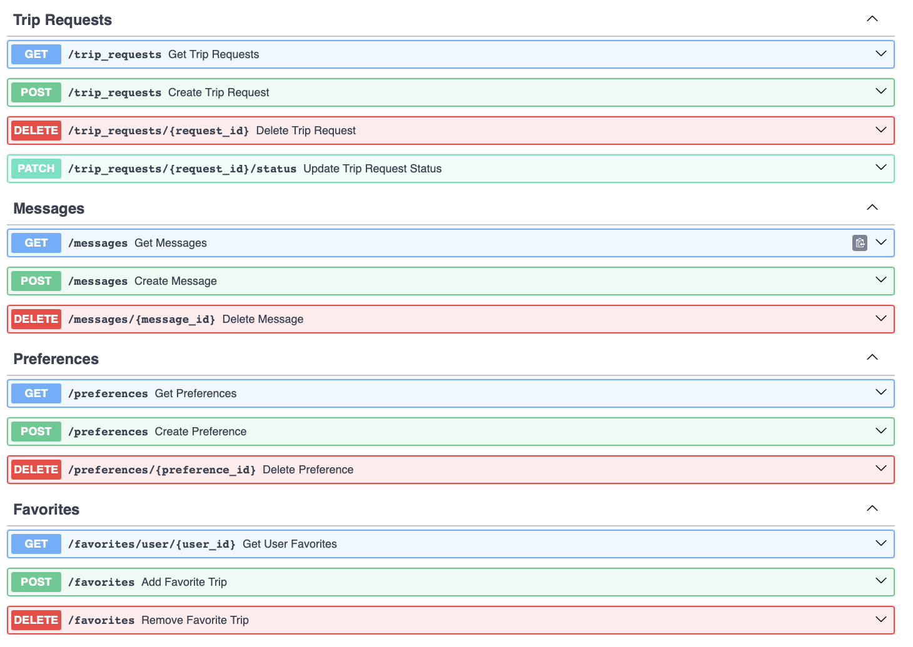
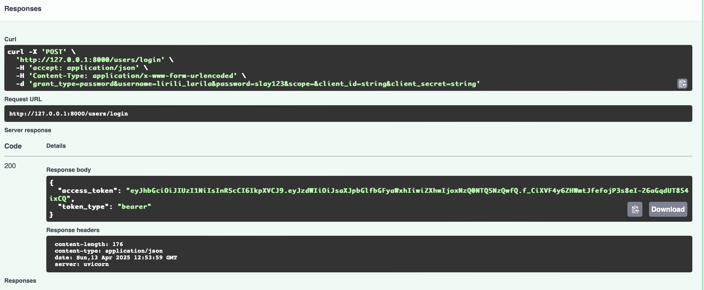
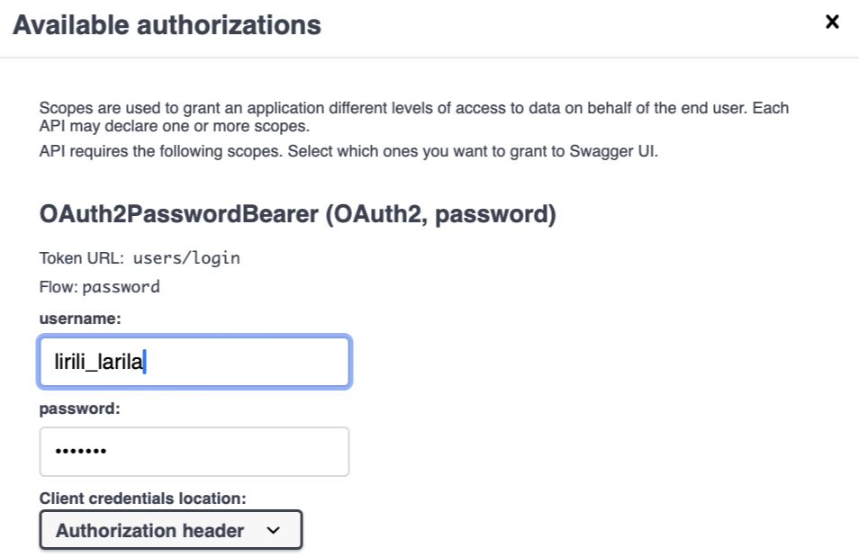
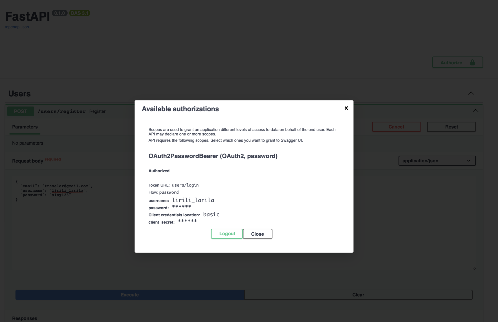

Лабораторная часть. Разработка веб-приложения для поиска партнеров в путешествие.
Задание:
-
Задача - создать веб-приложение, которое поможет людям находить партнеров для совместных путешествий. Приложение должно предоставлять возможность пользователям находить попутчиков для конкретных путешествий, обмениваться информацией о планируемых поездках и обсуждать детали маршрута. Функционал веб-приложения должен включать следующее:
-
Создание профилей: Возможность пользователям создавать профили, указывать информацию о себе, своих навыках, опыте работы и предпочтениях по проектам.
- Создание поездок: Возможность пользователям создавать объявления о планируемых поездках с указанием дат, маршрута, предполагаемой длительности и других деталей.
- Поиск попутчиков: Функционал поиска попутчиков для конкретных поездок на основе заданных критериев, таких как место отправления, место назначения, даты и т.д.
- Управление поездками: Возможность управления созданными поездками, включая добавление/изменение деталей, отмену поездки и т.д.
Модели:
Веб-приложение для поиска попутчиков построено на SQLModel и содержит следующие основные модели:
👤 User (Пользователь) Модель пользователя содержит уникальный ID, имя пользователя (username), электронную почту, хэшированный пароль, возраст и краткую биографию. Пользователь может создавать поездки и подавать заявки на участие в чужих поездках.
🏖 Trip (Поездка) Поездка включает ID, владельца (связь с пользователем), место назначения, даты начала и окончания, а также описание. Также связана с предпочтениями (например, тип путешествия), заявками на участие и сообщениями, оставленными пользователями.
❤️ Preference (Предпочтение) Отражает предпочтения, связанные с путешествием — например, «горы», «пляж», «экотуризм». Каждая поездка может иметь несколько предпочтений через промежуточную модель TripPreference.
🔧 TripPreference (Связь поездки и предпочтения) Промежуточная таблица для реализации связи многие-ко-многим между поездками и предпочтениями. Хранит только идентификаторы поездки и предпочтения.
🆗 TripRequest (Заявка на участие) Представляет собой заявку пользователя на участие в конкретной поездке. Содержит статус заявки (ожидание, принято, отклонено), а также связи с пользователем и поездкой.
💬 Message (Сообщение) Сообщение, отправленное пользователем в рамках обсуждения конкретной поездки. Содержит текст, дату/время и связь с отправителем и поездкой.
⭐ FavoriteTrip (Избранные поездки) Позволяет пользователю добавить поездку в избранное. Реализуется как таблица с двумя внешними ключами: на пользователя и на поездку.
from sqlmodel import SQLModel, Field, Relationship
from typing import List, Optional
from datetime import datetime
class User(SQLModel, table=True):
id: int | None = Field(default=None, primary_key=True)
username: str = Field(unique=True, index=True)
email: str = Field(unique=True, index=True)
hashed_password: str
age: Optional[int] = Field(default=None)
bio: Optional[str] = Field(default=None)
trips: List["Trip"] = Relationship(back_populates="owner")
trip_requests: List["TripRequest"] = Relationship(back_populates="user")
class TripPreference(SQLModel, table=True):
trip_id: int = Field(foreign_key="trip.id", primary_key=True)
preference_id: int = Field(foreign_key="preference.id", primary_key=True)
class Trip(SQLModel, table=True):
id: int | None = Field(default=None, primary_key=True)
owner_id: int = Field(foreign_key="user.id", index=True)
destination: str
start_date: datetime
end_date: datetime
description: Optional[str] = Field(default=None)
owner: User = Relationship(back_populates="trips")
trip_requests: List["TripRequest"] = Relationship(back_populates="trip")
preferences: List["Preference"] = Relationship(
back_populates="trips",
link_model=TripPreference
)
messages: List["Message"] = Relationship(back_populates="trip")
class Preference(SQLModel, table=True):
id: int | None = Field(default=None, primary_key=True)
name: str = Field(index=True)
trips: List["Trip"] = Relationship(
back_populates="preferences",
link_model=TripPreference
)
class TripRequest(SQLModel, table=True):
id: int | None = Field(default=None, primary_key=True)
user_id: int = Field(foreign_key="user.id", index=True)
trip_id: int = Field(foreign_key="trip.id", index=True)
status: str = Field(default="pending") # pending, accepted, rejected
user: User = Relationship(back_populates="trip_requests")
trip: Trip = Relationship(back_populates="trip_requests")
class Message(SQLModel, table=True):
id: int | None = Field(default=None, primary_key=True)
sender_id: int = Field(foreign_key="user.id", index=True)
trip_id: int = Field(foreign_key="trip.id", index=True)
content: str
timestamp: datetime = Field(default_factory=datetime.utcnow)
sender: User = Relationship()
trip: Trip = Relationship(back_populates="messages")
class FavoriteTrip(SQLModel, table=True):
user_id: int = Field(foreign_key="user.id", primary_key=True)
trip_id: int = Field(foreign_key="trip.id", primary_key=True)
Эндпойнты:
В проекте я создала директорию routers, в которой храню файлы с эндпойнтами к каждой модели. * #### Users: В файле с эндпойнтами юзера реализованы эндпойнты с регистрацией и авторизацией пользователя с помощью токена, а также базовые CRUD-запросы. Эндпойнт /{user_id}/with_trips выводит информацию о пользователе и связанного с ним поездками.

from fastapi import APIRouter, Depends, HTTPException, status
from sqlalchemy.orm import Session
from fastapi import Form
from sqlalchemy.orm import selectinload
from fastapi.security import OAuth2PasswordBearer, OAuth2PasswordRequestForm
from auth import *
from models import User
from sqlmodel import Session, select
from schemas import *
from connection import get_session
router = APIRouter(prefix="/users", tags=["Users"])
oauth2_scheme = OAuth2PasswordBearer(tokenUrl="users/login")
def get_current_user(token: str = Depends(oauth2_scheme), db: Session = Depends(get_session)):
try:
payload = decode_token(token)
username = payload.get("sub")
if username is None:
raise HTTPException(status_code=401, detail="Invalid token")
user = db.query(User).filter(User.username == username).first()
if user is None:
raise HTTPException(status_code=401, detail="User not found")
return user
except JWTError:
raise HTTPException(status_code=401, detail="Invalid token")
@router.post("/register", response_model=UserOut)
def register(user_data: UserCreate, db: Session = Depends(get_session)):
if db.query(User).filter(User.username == user_data.username).first():
raise HTTPException(status_code=400, detail="Username already registered")
user = User(
email=user_data.email,
username=user_data.username,
hashed_password=hash_password(user_data.password)
)
db.add(user)
db.commit()
db.refresh(user)
return user
@router.post("/login", response_model=Token)
def login(form_data: OAuth2PasswordRequestForm = Depends(), db: Session = Depends(get_session)):
# Проверка пользователя в базе данных
user = db.query(User).filter(User.username == form_data.username).first()
if not user or not verify_password(form_data.password, user.hashed_password):
raise HTTPException(status_code=401, detail="Incorrect username or password")
access_token = create_access_token(data={"sub": user.username})
return {"access_token": access_token, "token_type": "bearer"}
@router.get("/me", response_model=UserOut)
def read_users_me(current_user: User = Depends(get_current_user)):
return current_user
@router.get("/", response_model=list[UserOut])
def get_all_users(db: Session = Depends(get_session)):
return db.query(User).all()
@router.post("/change-password")
def change_password(
old_password: str = Form(...),
new_password: str = Form(...),
current_user: User = Depends(get_current_user),
db: Session = Depends(get_session)
):
if not verify_password(old_password, current_user.hashed_password):
raise HTTPException(status_code=400, detail="Incorrect old password")
current_user.hashed_password = hash_password(new_password)
db.commit()
return {"message": "Password changed successfully"}
@router.put("/update")
def update_user(
username: str = Form(...),
email: str = Form(...),
bio: str = Form(...),
age: int = Form(...),
current_user: User = Depends(get_current_user),
db: Session = Depends(get_session)
):
if current_user.id != current_user.id:
raise HTTPException(status_code=403, detail="You can only update your own data")
if username:
current_user.username = username
if email:
current_user.email = email
if bio:
current_user.bio = bio
if age:
current_user.age = age
db.commit()
db.refresh(current_user)
return {"message": "User data updated successfully", "user": current_user}
@router.get("", response_model=List[User])
def get_users(db: Session = Depends(get_session)):
users = db.exec(select(User)).all()
return users
@router.post("", response_model=User)
def create_user(user: User, db: Session = Depends(get_session)):
db_user = User(username=user.username, email=user.email, hashed_password=user.hashed_password, age=user.age, bio=user.bio)
db.add(db_user)
db.commit()
db.refresh(db_user)
return db_user
@router.get("/{user_id}", response_model=User)
def get_user(user_id: int, db: Session = Depends(get_session)):
db_user = db.get(User, user_id)
if not db_user:
raise HTTPException(status_code=404, detail="User not found")
return db_user
@router.delete("/{user_id}")
def delete_user(user_id: int, db: Session = Depends(get_session)):
user = db.get(User, user_id)
if not user:
raise HTTPException(status_code=404, detail="User not found")
db.delete(user)
db.commit()
return {"message": "User deleted successfully"}
@router.get("/{user_id}/with_trips", response_model=UserWithTrips)
def get_user_with_trips(user_id: int, db: Session = Depends(get_session)):
db_user = db.exec(select(User).where(User.id == user_id).options(selectinload(User.trips))).first()
if not db_user:
raise HTTPException(status_code=404, detail="User not found")
return db_user
Пример работы: * Выводим список всех пользователей:

* Изменение пользовательских данных с авторизацией:
* #### Trips: В файле с эндпойнтами поездки реализован поиск по заданным параметрам и запрос /{trip_id}/with_messages, который выведет поездку и все сообщения, оставленные к ней. Также реализованы базовые CRUD-запросы.from fastapi import APIRouter, Depends, HTTPException, Query
from typing import List, Optional
from sqlmodel import Session, select
from sqlalchemy.orm import selectinload
from datetime import datetime
from connection import get_session
from models.models import Trip, User
from schemas import TripWithMessages
router = APIRouter(prefix="/trips", tags=["Trips"])
@router.get("", response_model=List[Trip])
def get_trips(db: Session = Depends(get_session)):
return db.exec(select(Trip)).all()
@router.post("", response_model=Trip)
def create_trip(trip: Trip, db: Session = Depends(get_session)):
user = db.get(User, trip.owner_id)
if not user:
raise HTTPException(status_code=400, detail="User not found")
db.add(trip)
db.commit()
db.refresh(trip)
return trip
@router.get("/search", response_model=List[Trip])
def search_trips(destination: Optional[str] = None, start_date: Optional[datetime] = None,
end_date: Optional[datetime] = None, owner_id: Optional[int] = None,
db: Session = Depends(get_session)):
query = select(Trip)
if destination:
query = query.where(Trip.destination.ilike(f"%{destination}%"))
if start_date:
query = query.where(Trip.start_date >= start_date)
if end_date:
query = query.where(Trip.end_date <= end_date)
if owner_id:
query = query.where(Trip.owner_id == owner_id)
return db.exec(query).all()
@router.get("/{trip_id}", response_model=Trip)
def get_trip(trip_id: int, db: Session = Depends(get_session)):
trip = db.get(Trip, trip_id)
if not trip:
raise HTTPException(status_code=404, detail="Trip not found")
return trip
@router.get("/{trip_id}/with_messages", response_model=TripWithMessages)
def get_trip_with_messages(trip_id: int, db: Session = Depends(get_session)):
trip = db.exec(select(Trip).where(Trip.id == trip_id).options(selectinload(Trip.messages))).first()
if not trip:
raise HTTPException(status_code=404, detail="Trip not found")
return trip
@router.delete("/{trip_id}")
def delete_trip(trip_id: int, db: Session = Depends(get_session)):
trip = db.get(Trip, trip_id)
if not trip:
raise HTTPException(status_code=404, detail="Trip not found")
db.delete(trip)
db.commit()
return {"message": "Trip deleted successfully"}
Пример работы: * Поиск по поездкам:

* Поездка и сообщения к ней:
По аналогии реализованы эндпойнты к другим моделям. Полный список всех эндпойнтов:

Авторизация с помощью токенов:
Создаем файл auth.py, в котором будем генерировать токены:
pwd_context = CryptContext(schemes=["bcrypt"], deprecated="auto")
def hash_password(password: str):
return pwd_context.hash(password)
def verify_password(plain_password, hashed_password):
return pwd_context.verify(plain_password, hashed_password)
def create_access_token(data: dict, expires_delta: timedelta = None):
to_encode = data.copy()
expire = datetime.utcnow() + (expires_delta or timedelta(minutes=15))
to_encode.update({"exp": expire})
return jwt.encode(to_encode, SECRET_KEY, algorithm=ALGORITHM)
def decode_token(token: str):
return jwt.decode(token, SECRET_KEY, algorithms=[ALGORITHM])
Далее прописываем эндпойнты регистрации, авторизации, смены пароля и данных пользователя:
@router.post("/register", response_model=UserOut)
def register(user_data: UserCreate, db: Session = Depends(get_session)):
if db.query(User).filter(User.username == user_data.username).first():
raise HTTPException(status_code=400, detail="Username already registered")
user = User(
email=user_data.email,
username=user_data.username,
hashed_password=hash_password(user_data.password)
)
db.add(user)
db.commit()
db.refresh(user)
return user
@router.post("/login", response_model=Token)
def login(form_data: OAuth2PasswordRequestForm = Depends(), db: Session = Depends(get_session)):
# Проверка пользователя в базе данных
user = db.query(User).filter(User.username == form_data.username).first()
if not user or not verify_password(form_data.password, user.hashed_password):
raise HTTPException(status_code=401, detail="Incorrect username or password")
access_token = create_access_token(data={"sub": user.username})
return {"access_token": access_token, "token_type": "bearer"}
@router.get("/me", response_model=UserOut)
def read_users_me(current_user: User = Depends(get_current_user)):
return current_user
@router.get("/", response_model=list[UserOut])
def get_all_users(db: Session = Depends(get_session)):
return db.query(User).all()
@router.post("/change-password")
def change_password(
old_password: str = Form(...),
new_password: str = Form(...),
current_user: User = Depends(get_current_user),
db: Session = Depends(get_session)
):
if not verify_password(old_password, current_user.hashed_password):
raise HTTPException(status_code=400, detail="Incorrect old password")
current_user.hashed_password = hash_password(new_password)
db.commit()
return {"message": "Password changed successfully"}
@router.put("/update")
def update_user(
username: str = Form(...),
email: str = Form(...),
bio: str = Form(...),
age: int = Form(...),
current_user: User = Depends(get_current_user),
db: Session = Depends(get_session)
):
if current_user.id != current_user.id:
raise HTTPException(status_code=403, detail="You can only update your own data")
if username:
current_user.username = username
if email:
current_user.email = email
if bio:
current_user.bio = bio
if age:
current_user.age = age
db.commit()
db.refresh(current_user)
return {"message": "User data updated successfully", "user": current_user}
Пример работы авторизации:

Доступ к запросам по паролю (изменение пароля и пользовательских данных):
